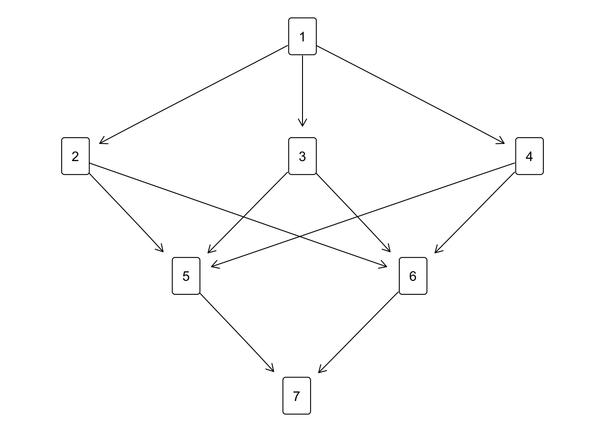
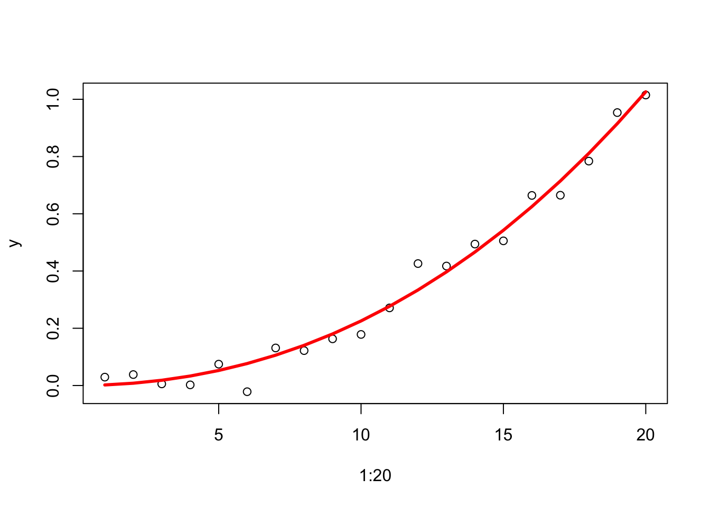

25 Mathematical Addenda
This huge chapter has several purposes. It reviews some well known mathematical results, defines notation and terminology, serves as a reminder, and provides a reference. We do not give proofs of these results, and not many references, because the proofs be found in most textbooks. But some sections (for instance the ones on majorization, quadratic programming, splines, and quadratic penalties) we offer more than that. These sections are taken mostly from my unpublished papers and they go into much more detail. The results I present are also well known, but somewhat harder to find, and I will try to emphasize the aspects relevant for MDS.
25.1 Notation
25.1.1 Symbols
\(\mathbb{R}^n\)
\(\mathbb{R}^{n\times p}\)
\(\mathbb{S}^{n}\): unit sphere in
\(\mathbb{B}^{n}\): unit ball
\(\sigma\): generic MDS loss function
\(\mathcal{D}f\): derivative
\(\mathcal{D}_if\): partial derivative
\(\min_{x\in X} f(x)\)
\(\mathop{\text{argmin}}_{x\in X} f(x)\)
directional derivative gradient Hessian
\(\partial f\): subdifferential
\(f:X\Rightarrow Y\): function
\(f:X_1\times...\times X_n\Rightarrow Y\)
\(\otimes\): Kronecker product of matrices
\(\text{vec}\)
\(\oplus\): direct sum of matrices
\(1:n\)
\(\Pi\): permutation
\([a,b]\): closed interval
25.1.2 Summation
\[\mathop{\sum\sum}_{1\leq i<j\leq n} x_{ij}\]
\[\sum_{i=1}^n\{x_iy_i\mid x_i > 0\}\]
25.2 Matrices
25.2.1 Matrix Spaces
The linear space of all \(n\times p\) matrices is \(\mathbb{R}^{n\times p}\). The subspace of \(\mathbb{R}^{n\times n}\) of all symmetric matrices is \(\mathbb{S}^{n\times n}\).
25.2.2 Constants
All vectors are column vectors. In this section we define some matrix and vector constants. We assume that the order of the matrices, or the length of the vectors, is clear from the context, as it will be a.e. in the body of the book.
- \(I\) is the identity matrix,
- \(e\) is a vector with all elements +1,
- \(\iota\) is a vector with elements \(1,2,\cdots,n\),
- \(E\) is a matrix with all elements +1,
- \(\emptyset\) is a matrix with all elements 0,
- \(J\) is the centering matrix \(J=I-\frac{1}{e'e}E\).
25.2.3 Diff Matrices
A unit vector \(e_i\) is a vector with element \(i\) equal to \(+1\) and all other elements equal to 0. A unit matrix \(E_{ij}\) is a matrix of the form \(e_i^{\ }e_j'\),
A diff matrix \(A_{ij}\) is a matrix of the form \((e_i-e_j)(e_i-e_j)'\).
The element in row \(i\) and column \(j\) of a matrix \(X\) is normally referred to as \(x_{ij}\). But in some cases, to prevent confusion, we use the notation \(\{X\}_{ij}\). Thus, for example, \(\{e_i\}_j=\delta^{ij}\), where \(\delta^{ij}\) is Kronecker’s delta (zero when \(i=j\) and one otherwise).
The diff matrices \(A_{ij}\) with \(i\not= j\) have only four non-zero elements
\[\begin{align} \begin{split} \{A_{ij}\}_{ii}&=\{A_{ij}\}_{jj}=+1,\\ \{A_{ij}\}_{ij}&=\{A_{ij}\}_{ji}=-1, \end{split} \tag{25.1} \end{align}\]
and all other elements of \(A_{ij}\) are zero. Thus \(A_{ij}=A_{ji}\) and \(A_{ii}=0\). Diff matrices are symmetric, and positive semidefinite. They are also doubly-centered, which means that their rows and columns add up to zero. If \(i\not j\) they are of rank one and have one eigenvalue equal to two, which means \(A_{ij}^s=2^{s-1}A_{ij}\). Also
\[\begin{equation} \mathop{\sum\sum}_{1\leq i<j\leq n} A_{ij}=nI-ee'=nJ, \tag{25.2} \end{equation}\]
with \(J\) the centering matrix*.
25.2.4 Sign Matrices
\(S(x)\) is the sign matrix of \(x\in\mathbb{R}^n\) if \(s_{ij}(x)=\text{sign}(x_i-x_j)\) for all \(i\) and \(j\), i.e.
\[\begin{equation} s_{ij}(x):=\begin{cases}+1&\text{ if }x_i>x_j,\\ -1&\text{ if }x_i<x_j,\\ \hfill 0&\text{ if }x_i=x_j. \end{cases} \tag{25.3} \end{equation}\]
The set of all sign matrices is \(\mathcal{S}\).
Sign matrices are hollow and anti-symmetric. A sign matrix \(S\) is strict if its only zeroes are on the diagonal, i.e. \(S=S(P\iota)\) for some permutation matrix \(P\). The set of strict sign matrices is \(\mathcal{S}_+\). Since there is a 1:1 correspondence between strict sign matrices and permutations, there are \(n!\) strict sign matrices. The row sums and column sums of a strict sign matrix are some permutation of the numbers \(n-2\iota+1\).
25.2.5 Sums and Products
If \(A\) and \(B\) are matrices with the same number of rows and columns then the Hadamard product \(C:=A\times B\) is defined as \(c_{ij}=a_{ij}b_{ij}\). The Hadamard square \(A^{(2)}\) is defined as \(A\times A\), and similar definitions apply to higher Hadamard powers.
If \(A\) and \(B\) are matrices then their direct sum \(A\oplus B\) is the matrix \[\begin{equation} C:=\begin{bmatrix}A&\emptyset\\\emptyset&B\end{bmatrix}. \tag{25.4} \end{equation}\] Direct sums of more than two matrices are defined recursively as \(D=C\oplus(A\oplus B)\), and so on.
If \(A\) and \(B\) are matrices then their direct product or Kronecker product \(C=A\otimes B\) is the matrix with blocks \(a_{ij}B\). Thus, for example, if \(A\) is \(2\times 3\) and \(B\) is \(n\times m\) then \(C\) is \((2n)\times (3m)\) and \[\begin{equation} C=\begin{bmatrix}a_{11}B&a_{12}B&a_{13}B\\a_{21}B&a_{22}B&a_{23}B\end{bmatrix}. \tag{25.5} \end{equation}\] If \(A\) and \(B\) are arrays … then their outer product \(C=A\triangle B\) is the four-dimensional array with \(c_{ijkl}=a_{ij}b_{kl}\). Thus for two vectors \(a\) and \(b\) we have \(ab'=a\triangle b\). The outer sum \(C=A\square B\) is defined in the same way: \(c_{ijkl}=a_{ij}+b_{kl}\). That’s pretty atrocious notation, but I only use it once or twice in the whole book.
25.2.6 Inverse
Throughout the book we use \(X^{-1}\) for the Moore-Penrose Inverse (MPI) of \(X\) (see section 25.2.10). If \(X\) is square and non-singular the MPI is simply equal to the inverse of \(X\), i.e \(XX^{-1}=X^{-1}X=I\).
25.2.7 The Loewner order
If \(A\) and \(B\) are square symmetric matrices then
- \(A\precsim B\) means \(B-A\) is positive semi-definite (PSD).
- \(A\succsim B\) means \(B-A\) is negative semi-definite (NSD).
- \(A\prec B\) means \(B-A\) is positive definite (PD).
- \(A\succ B\) means \(B-A\) is negative definite (ND).
25.2.8 Eigen Decomposition
If \(A\) is square symmetric of order \(n\) then there exists
- a matrix \(K\) of order \(n\) with \(K'K=KK'=I\),
- a diagonal matrix \(\Lambda\) of order \(n\),
such that \(A=K\Lambda K'\). If \(A\) is PSD, then so is \(\Lambda\). The number of non-zero diagonal elements in \(\Lambda\) is the rank of \(A\).
25.2.9 Singular Value Decomposition
If \(X\) is an \(n\times m\) matrix then there exist
- a matrix \(K\) of order \(n\) with \(K'K=KK'=I\),
- a matrix \(L\) of order \(m\) with \(L'L=LL'=I\),
- a non-negative diagonal \(n\times m\) matrix \(\Lambda\),
such that \(X=K\Lambda L'\). The number of non-zero diagonal elements in \(\Lambda\) is the rank of \(X\).
If \(X\) has rank \(r\) we can partition the matrices in the SVD accordingly as \[\begin{align} \begin{split} K&=\begin{bmatrix}K_+&K_0\end{bmatrix},\\ \Lambda&=\begin{bmatrix}\Lambda_{++}&\emptyset\\\emptyset&\emptyset\end{bmatrix},\\ L&=\begin{bmatrix}L_+&L_0\end{bmatrix}, \end{split} \tag{25.6} \end{align}\] where \(\Lambda_{++}\) is of order \(r\) and pd and both \(K_+\) and \(L_+\) in (25.6) have \(r\) columns. Thus also \(X=K_+^{\ }\Lambda_{++}^{\ }L_+'\).
25.2.10 Moore-Penrose Inverse
The MPI can be defined in terms of the SVD as \(X^{-1}=L_+\Lambda_{++}^{-1}K_+'\).
It follows that the MPI satisfies the four Penrose Conditions
- \(XX^{-1}\) is symmetric,
- \(X^{-1}X\) is symmetric,
- \(X^{-1}XX^{-1}=X^{-1}\),
- \(XX^{-1}X=X\).
In fact, these four conditions uniquely define the MPI.
25.2.11 Full-rank Decomposition
If \(X=FG'\) is a full rank decomposition, then the Moore-Penrose inverse is \(X^+=G(F'G)^{-1}F'\).
25.2.12 SDC matrices
Diagonally dominant Aij is basis
To analyze the singularity of \(V\) in more detail we observe that \(z'Vz=\mathop{\sum\sum}_{1\leq i<j\leq n}w_{ij}(z_i-z_j)^2\). This is zero if and only if all \(w_{ij}(z_i-z_j)^2\) are zero. If we permute the elements of \(z\) such that \(z_1\leq\cdots\leq z_n\) then the matrix with elements \((z_i-z_j)^2\) can be partitioned such that the diagonal blocks, corresponding with tie-blocks in \(z\), are zero and the off-diagonal blocks are strictly positive. Thus \(z'Vz=0\) if and only if the corresponding off-diagonal blocks of \(W\) are zero. In other words, we can find a \(z\) such that \(z'Vz=0\) if and only if \(W\) is the direct sum of a number of smaller matrices. If this is not the case we call \(W\) irreducible, and \(z'Vz>0\) for all \(z\not= e\), so that the rank of \(V\) is \(n-1\). ### Sign Matrices
25.3 Inequalities
There are some elementary inequalities that play a large role throughout the book.
25.3.1 Cauchy-Schwartz
We start with the Cauchy-Schwarz inequality (CS, from now on).
25.3.2 Arithmetic/Geometric Mean
Next is the arithmetic mean/geometric mean inequality (from now on AM/GM). We only need the simplest case, proved by expanding \(\frac12(\sqrt{x}-\sqrt{y})^2\geq 0\),
Finally, from \(\frac12(x-y)'A(x-y)\geq 0\),
25.4 Calculus/Analysis
25.4.1 Functions
A function \(f\) from \(X\) to \(Y\) is a subset of the Cartesian product \(X\otimes Y\), for which \((x,y)\in f\) and \((x,z)\in f\) implies \(y=z\). Thus there is a unique \(y\) associated with each \(x\). We usually write \(f:X\Rightarrow Y\), and we try distinguish the function \(f\) from its value at \(x\in X\), which is \(f(x)\).
\[ f_j(x) \] If \(f\) on \(X\otimes Y\) then \(f(\bullet,y)\) is on \(X\) \(g(x)=f(x,y)\). Projection
25.4.2 Differentiation
25.4.2.1 Derivative
Suppose \(f\) maps an open set \(X\subseteq\mathbb{R}^n\) into \(\mathbb{R}^m\). Then \(f\) is (Fréchet, totally) differentiable at \(x\in X\) if there is a linear map \(\mathcal{D}f\) of \(X\) into \(\mathbb{R}^m\) such that
\[\begin{equation} \mathcal{D}f(x)=\lim_{\delta\rightarrow 0} \frac{f(x+\delta)-f(x)-\mathcal{D}f(x)\delta}{\|\delta\|}=0, \tag{25.7} \end{equation}\]
which we can also write as
\[\begin{equation} \mathcal{D}f(x+\delta)=f(x)+\mathcal{D}f(x)\delta+o(\|\delta\|). \tag{25.8} \end{equation}\]
So, just to be clear about the notation, \(\mathcal{D}f(x)(y)\) means the value in \(\mathbb{R}^m\) of the linear map \(\mathcal{D}f(x)\) at \(y\in X\).
For real-valued functions of a single real variable we also use \(f'(x), f''(x), \cdots\) for the successive derivatives.
Second derivatives symmetric quadratic form
\(\mathcal{D}^2f(x)=\mathcal{D}(\mathcal{D}f(x))\)
\[\mathcal{D}^2f(x)(y,z)=\mathcal{D}^2f(x)(z,y)\]
25.4.2.2 Partial Derivatives
\[ \mathcal{D}_f(x,y)= \] \[ f_i(\epsilon)=f(x+\epsilon\ e_i) \]
\[ \mathcal{D}_if(x)=\mathcal{D}f_i(0) \]
\[ \mathcal{D}f(x)(y)=\sum_{i=1}^n\mathcal{D}_if(x)(y_i) \]
25.4.2.3 Jacobian
\[ \{\mathcal{J}F(x)\}_{ij}=\{\mathcal{D}_i^{\ }f_j(x)\} \]
25.4.2.4 Gradient
\[ \{\nabla f(x)\}_i=\mathcal{D}f(x)(e_i) \]
25.4.2.5 Hessian
\[ \{\nabla^2 f(x)\}_{ij}=\mathcal{D}^2f(x)(e_i,e_j) \]
25.4.2.6 Differentials
If \(f\) is differentiable at \(x\) then the function \(\mathcal{D}f(x)(u)\) is called the differential
25.4.3 Directional Derivatives
25.4.3.1 First Order
For a function \(f:\mathbb{R}^{n\times p}\rightarrow\mathbb{R}\) we define the directional derivative at \(X\) in direction \(Y\) as
\[\begin{equation} D_+f(x;y):=\lim_{\epsilon\downarrow 0}\frac{f(x+\epsilon y)-f(x)}{\epsilon}, \tag{25.9} \end{equation}\]
where \(\epsilon\downarrow 0\) means a limit from the right, in which epsilon only takes positive values. The definition assumes, of course, that the limit exists.
25.4.3.2 Second Order
Similarly, the (Dini) second directional derivative is
\[\begin{equation} D_+^2f(x;y):=lim_{\epsilon\downarrow 0}\frac{f(x+\epsilon y)-f(x)-\epsilon D_+f(x;y)}{\frac12\epsilon^2}, \tag{25.10} \end{equation}\]
whch assume that both \(D_+f(x;y)\) and the limit exist. If \(f\) is twice diffentiable
\[ D_+^2f(x;y)=\mathcal{D}^2f(x)(y,y). \] The second directional derivative in the sense of Ben-Tal and Zowe is
\[\begin{equation} \mathcal{D}_{BZ}^2f(x;y,z):=\lim_{\epsilon\downarrow 0}\frac{f(x+\epsilon y+\epsilon^2 z)-f(x)-\epsilon\mathcal{D}_+f(x;y)}{\epsilon^2}, \tag{25.11} \end{equation}\]
provided again that both \(\mathcal{D}_+f(x;y)\) and the limit exist.
If \(f\) is twice differentiable
\[\begin{equation} \frac12 \{\mathcal{D}^2 f(x)(y,y)+\mathcal{D}f(x)(z) \tag{25.12} \end{equation}\]
25.4.4 Local Minima, Critical Points
A function \(f\) has a global minimum on \(X\) at \(\hat x\) if \(f(\hat x)\leq f(x)\) for all \(x\in X\).
A function \(f\) has a local minimum on \(X\) at \(\hat x\) if there is a neighborhood \(\mathcal{N}\) of \(\hat x\) such that \(f(\hat x)\leq f(x)\) for all \(x\in\mathcal{N}\cap X\).
Global and local maxima of \(f\) are global and local minima of \(-f\).
A function \(f\) has a singular point at \(x\) if it is not differentiable at \(x\).
A function \(f\) has a stationary point at \(x\) if it is differentiable at \(x\) and \(\mathcal{D}f(x)=0\).
A function \(f\) has a saddle point at a stationary point \(x\) if it is neither alocal maximum nor a local minimum.
25.4.5 Necessary Conditions
First order
Ben-Tal and Zowe
25.4.6 l’Hôpital’s Rule
We all know that \(0/0\) is not defined and should be avoided at all cost. But then again we have \[ \lim_{x\rightarrow 0}\frac{\sin(x)}{x}=\cos(0)=1, \] and in fact \(\sup_x \frac{sin(x)}{x}=1\). Or, for that matter, if \(f\) is differentiable at \(x\) then
\[ \lim_{\epsilon\rightarrow 0}\frac{f(x+\epsilon)-f(x)}{\epsilon}=f'(x) \] If \(f:\mathbb{R}\Rightarrow\mathbb{R}\) and \(g:\mathbb{R}\Rightarrow\mathbb{R}\) are two functions
- differentiable in an interval \(\mathcal{I}\), except possibly at \(c\in\mathcal{I}\),
- \(g'(x)\not=0\) for all \(x\in\mathcal{I}\),
- \(\lim_{x\rightarrow c}f(x)=\lim_{x\rightarrow c}g(x)=0\) or \(\lim_{x\rightarrow c}f(x)=\lim_{x\rightarrow c}g(x)=\pm\infty\), then \[ \lim_{x\rightarrow c}\frac{f(x)}{g(x)}=\lim_{x\rightarrow c}\frac{f'(x)}{g'(x)} \]
We use l’Hôpital’s rule in chapter 14, section 14.3.1 on degeneracies in nonmetric unfolding. We have not explored the multivariate versions of l’Hôpitals rule, discussed for example by Lawlor (2020).
25.4.7 Implicit Functions
25.5 Convexity
25.5.1 Existence of Minima
Projection on a convex set
25.5.2 Duality
25.5.3 Subdifferentials
Almost everywhere twice differentiable,
A vector \(g\) is a subgradient of a convex function \(f\) at \(x\) if \(f(x)\geq f(y)+g'(x-y)\) for all \(y\). If \(f\) is differentiable at \(x\) then the subgradient is unique and equal to gradient, i.e. the vector of partial derivatives at \(x\). The set of all subgradients of \(f\) at \(x\) is the subdifferential \(\partial f(x)\). Subdifferentials of convex functions are non-empty, compact, and convex.
There are some useful calculus rules for the subdifferentials of finite convex function defined on \(\mathbb{R}^n\). They can be found, with proofs, in any book on convex analysis, starting with Rockafellar (1970).
Sum rule: If \(f_1,\cdots,f_m\) are convex, \(\lambda_1,\cdots,\lambda_m\) are positive, and \(h=\lambda_1 f_1+\cdots+\lambda_mf_m\) then \[ \partial h(x)=\lambda_1\partial f_1(x)+\cdots+\lambda_m\partial f_m(x). \] (Hiriart-Urruty and Lemaréchal (1993), theorem 4.1.1)
Affine rule: If \(f\) is convex and \(h(x)=f(Ax+b)\) then \[ \partial h(x)=A'\partial f(Ax+b). \] (Hiriart-Urruty and Lemaréchal (1993), theorem 4.2.1)
Sup rule: Suppose \(f:\mathbb{R}^n\otimes \mathbb{Y}\), with \(\mathbb{Y}\subseteq\mathbb{R}^m\), and suppose
- \(f(\bullet,y)\) is convex on \(\mathbb{R}^n\) for every \(y\in \mathbb{Y}\),
- \(f(x,\bullet)\) is continuous on \(\mathbb{Y}\) for every \(x\in\mathbb{R}^n\),
- \(\mathbb{Y}\) is compact.
If \(h(x)=\sup_{y\in\mathbb{Y}}f(x,y)\) then
\[ \partial h(x)=\text{conv}\left(\mathop{\cup}_{y\in Y(x)}\partial f(x,y)\right), \] where \(Y(x)=\{y\in\mathbb{Y}\mid f(x,y)=h(x)\}\) is the active set and conv() is the convex hull (Hiriart-Urruty and Lemaréchal (1993), theorem 4.4.2).
Max rule: \(f_1,\cdots,f_m\) are convex and \(h(x)=\max_{j=1}^m f_j(x)\) then \[ \partial h(x)=\text{conv}\left\{\mathop{\cup}_{k\in J(x)}\partial f_k(x)\right\}, \] where \(J(x)=\{j\mid f_j(x)=h(x)\}\) is the active set and conv(X) is the convex hull of \(X\).
25.5.4 DC Functions
Extremes, critical points
Toland Duality
25.5.5 Danskin-Berge Theorem
During my visit to Bell Labs in Murray Hill, somewhere around the time that Watergate was raging, there was some major excitement in our group because one of us had discovered that if \(g(x)=\min_y f(x,y)\) then \(\mathcal{D}g(x)=\mathcal{D}_1f(x,y(x))\), where \(y(x)\) is such that \(g(x)=f(x,y(x))\). This result simplified calculation of partial derivatives in MDS and related techniques, and of course psychometrics at the time was all about partial derivatives.
25.6 Fixed-Point Iterations
In fixed point iteration we generate a sequence of points by the rule
\[ x^{(k+1)}=F(x^{(k)}) \] In this book \(F\) is always a continuous self-map on \(\mathbb{R}^n\), i.e. \(F:\mathbb{R}^n\Rightarrow\mathbb{R}^n\).
If the sequence \(\{x_k\}\) converges to, say, \(x_\infty\) then, by the continuity of \(F\), we have \(x_\infty=F(x_\infty)\), and we say that \(x_\infty\) is a fixed point of \(F\). Many iterative algorithms, and all iterative algorithms in this book, generate sequences by fixed point iterations that hopefully converge to fixed points.
It should be noted that iterations of the form \[ x^{(k+1)}=F(x^{(k)},x^{(k-1)},\cdots,x^{(k-l)}), \] which do look more general, can be written as special cases of …. Define \[ y^{(k)}:=\begin{bmatrix}x^{(k)}\\x^{(k-1)}\\\vdots\\x^{(k-l)}\end{bmatrix} \] and, using \(F\) from …
\[ y^{(k+1)}=G(y^{(k)}):=\begin{bmatrix}x^{(k+1)}=F(y^{k})\\x^{(k)}\\\vdots\\x^{(k-l-1)}\end{bmatrix} \]
25.6.1 Point-to-set Maps
25.6.2 Zangwill’s Theorem
25.6.3 Ostrowski’s Theorem
25.7 Least Squares
25.7.1 Quadratic Programming
In this section we construct an algorithm for a general weighted linear least squares projection problem with equality and/or inequality constraints. It uses duality and unweighting majorization. The section takes the form of a small essay, with examples. This may seem somewhat excessive, but it provides an easy reference for both you and me and it serves as a manual for the corresponding R code.
We start with the primal problem, say problem \(\mathcal{P}\), which is minimizing
\[\begin{equation} f(x)=\frac12(Hx-z)'V(Hx-z) \tag{25.13} \end{equation}\]
over all \(x\) satisfying equalities \(Ax\geq b\) and equations \(Cx=d\). We suppose the Slater condition is satisfied, i.e. there is an \(x\) such that \(Ax>b\). And, in addition, we suppose the system of inequalities and equations is consistent, i.e. has at least one solution.
We first reduce the primal problem to a simpler, and usually smaller, one by partitioning the loss function. Define
\[\begin{align} \begin{split} W&:=H'VH,\\ y&:=W^{-1}H'Vz,\\ Q&:=(I-H(H'VH)^{-1}H'V).\\ \end{split} \tag{25.14} \end{align}\]
Then
\[\begin{equation} (Hx-y)'V(Hx-y)=(x-y)'W(x-y)+y'Q'VQy, \tag{25.15} \end{equation}\]
The simplified primal problem \(\mathcal{P}'\) is to minimize \((x-y)'W(x-y)\) over \(Ax\geq b\) and \(Cx=d\), where \(W\) is assumed to be positive definite. Obviously the solutions to \(\mathcal{P}\) and \(\mathcal{P}'\) are the same. The two loss function values only differ by the constant term \(y'Q'VQy\).
We do not solve \(\mathcal{P}'\) drectly, but we use Lagrangian duality and solve the dual quadratic programmng problem. The Lagrangian for \(\mathcal{P}'\) is
\[\begin{equation} \mathcal{L}(x,\lambda,\mu)=\frac12(x-y)'W(x-y)- \lambda'(Ax - b)-\mu'(Cx-d), \tag{25.16} \end{equation}\]
where \(\lambda\geq 0\) and \(\mu\) are the Lagrange multipliers.
Now
\[\begin{align} \begin{split} \max_{\lambda\geq 0}\max_\mu\mathcal{L}(x,\lambda,\mu)&=\\ &=\begin{cases}\frac12(x-y)'W(x-y)-\lambda'(Ax - b)-\mu'(Cx-d)&\text{ if }Ax\geq b,\\ +\infty&\text{ otherwise}, \end{cases} \end{split} \tag{25.17} \end{align}\]
and thus
\[\begin{equation} \min_x\max_{\lambda\geq 0}\max_\mu\mathcal{L}(x,\lambda,\mu)=\min_{Ax\geq b}\min_{Cx=d}\frac12(x-y)'W(x-y), \tag{25.18} \end{equation}\]
which is our original simplified primal problem \(\mathcal{P}'\).
We now look at the dual problem \(\mathcal{D}'\) (of \(\mathcal{P}'\)), which means solving
\[\begin{equation} \max_{\lambda\geq 0}\max_\mu\min_x\mathcal{L}(x,\lambda,\mu). \tag{25.19} \end{equation}\]
The inner minimum over \(x\) for given \(\lambda\) and \(\mu\) is attained at
\[\begin{equation} x=y+W^{-1}(A'\mid C')\begin{bmatrix}\lambda\\\mu\end{bmatrix}, \tag{25.20} \end{equation}\]
and is equal to \(-g(\lambda,\mu)\), where
\[\begin{equation} \frac12\begin{bmatrix}\lambda&\mu\end{bmatrix} \begin{bmatrix}AW^{-1}A'&AW^{-1}C'\\CW^{-1}A'&CW^{-1}C'\end{bmatrix}\begin{bmatrix}\lambda\\\mu\end{bmatrix}+\\ +\lambda'(Ay-b)\\ +\mu'(Cy-d) \tag{25.21} \end{equation}\]
Our strategy is to solve \(\mathcal{D'}\) for \(\lambda\geq 0\) and/or \(\mu\). Because of our biases we do not maximize \(-g\), we minimize \(g\). Then compute the solution of both \(\mathcal{P}'\) and \(\mathcal{P}\) from (25.20). The duality theorem for quadratic programming tells us the values of \(f\) at the optimum of \(\mathcal{P}'\) and \(-g\) at the optimum of \(\mathcal{D}'\) are equal, and of course the value at the optimum of \(\mathcal{P}\) is that of \(\mathcal{P}'\) plus the constant \(y'QVQy\).
From here on we can proceed with unweighting in various ways. We could, for instance, minimize out \(\mu\) and then unweight the resulting quadratic form. Instead, we go the easy way. Majorize the partitioned matrix \(K\) in the quadratic part of (25.21) by a similarly partitioned diagonal positive matrix \(E\).
\[\begin{equation} E:=\begin{bmatrix}F&\emptyset\\\emptyset&G\end{bmatrix}\gtrsim K:=\begin{bmatrix}AW^{-1}A'&AW^{-1}C'\\CW^{-1}A'&CW^{-1}C'\end{bmatrix} \tag{25.22} \end{equation}\]
Suppose \(\tilde\lambda\geq 0\) and \(\tilde\mu\) are the current best solutions of the dual problem. Put them on top of each other to define \(\tilde\gamma\), and do the same with \(\lambda\) and \(\mu\) to get \(\gamma\). Then \(g(\lambda,\mu)\) becomes
\[\begin{equation} \frac12 (\tilde\gamma+(\gamma-\tilde\gamma))'E(\tilde\gamma+(\gamma-\tilde\gamma))+\gamma'(Ry-e)=\\ =\frac12(\gamma-\tilde\gamma)'E(\gamma-\tilde\gamma)+ (\gamma-\tilde\gamma)'E(\tilde\gamma+(Ry-e))+\\+\frac12\tilde\gamma'E\tilde\gamma+\tilde\gamma'(Ry-e) \tag{25.23} \end{equation}\]
The last two terms do not depend on \(\gamma\), so for the majorization algorithm is suffices to minimize
\[\begin{equation} \frac12(\gamma-\tilde\gamma)'F(\gamma-\tilde\gamma)+ (\gamma-\tilde\gamma)'E(\tilde\gamma+(Ry-e)) \tag{25.24} \end{equation}\]
Let
\[\begin{equation} \xi:=\tilde\gamma-F^{-1}E(\tilde\gamma+(Ry-e)) \tag{25.25} \end{equation}\]
then (25.24) becomes
\[\begin{equation} \frac12(\gamma-\xi)'F(\gamma-\xi)-\frac12\xi'F\xi \tag{25.26} \end{equation}\]
Because \(F\) is diagonal \(\lambda_i=\max(0,\xi_i)\) for \(i=1,\cdots m_1\) and and \(\mu_i=\xi_{i+m_1}\) for \(i=1,\cdots m_2\).
Section A.1.18 has the R code for qpmaj(). The defaults are set to do a simple isotone regression, but of course the function has a much larger scope. It can handle equality constraints, linear convexity constraints, partial orders, and much more general linear inequalities. It can fit polynomials, monotone polynomials, splnes, and monotone splines of various sorts. It is possible to have only inequality constraints, only equality constraints, or both. The matrix \(H\) of predictors in (25.13) can either be there or not be there.
The function qpmaj() returns both \(x\) and \(\lambda\), and the values of \(\mathcal{P}\), \(\mathcal{P}'\), and \(\mathcal{D}'\). And also the predicted values \(Hx\), and the constraint values \(Ax-b\) and \(Cx-d\), if applicable. It’s always nice to check complimentary slackness \(\lambda'(Ax-b)=0\), and another check is provided because the values of \(\mathcal{P}'\) and \(\mathcal{D}'\) must be equal. Finally qpmaj() returns the number of iterations for the dual problem.
The function qpmaqj() does not have the pretense to compete in efficiency with the sophisticated pivoting and active set strategies for quadratic programming discussed for example by Best (2017). But it seems to do a reliable job on our small examples, and it is an interesting example of majorization and unweighting.
25.7.1.1 Example 1: Simple Monotone Regression
Here are the two simple monotone regression examples from section 11.1.1, the first one without weights and the second one with a diagonal matrix of weights.
y<-c(1,2,1,3,2,-1,3)
qpmaj(y)## $x
## [1] 1.0 1.4 1.4 1.4 1.4 1.4 3.0
##
## $fprimal
## [1] 4.6
##
## $fdual
## [1] 4.6
##
## $lambda
## [1] 0.0000000 0.5999999 0.1999999 1.7999999 2.3999999 0.0000000
##
## $inequalities
## [1] 4.000001e-01 -2.760349e-08 -4.466339e-08 -4.466339e-08 -2.760349e-08
## [6] 1.600000e+00
##
## $itel
## [1] 146qpmaj(y, v = diag(c(1,2,3,4,3,2,1)))## $x
## [1] 1.000000 1.400000 1.400000 1.777778 1.777778 1.777778 3.000000
##
## $fprimal
## [1] 11.37778
##
## $fdual
## [1] 11.37778
##
## $lambda
## [1] 0.000000 1.200000 0.000000 4.888889 5.555555 0.000000
##
## $inequalities
## [1] 4.000000e-01 0.000000e+00 3.777778e-01 -3.451610e-08 -2.391967e-08
## [6] 1.222222e+00
##
## $itel
## [1] 8225.7.1.2 Example 2: Monotone Regression with Ties
Now suppose the data have tie-blocks, which we indicate with \(\{1\}\leq\{2,3,4\}\leq\{5,6\}\leq\{7\}\). The Hasse diagram of the partial order (courtesy of Ciomek (2017)) is

In the primary approach to ties the inequality constraints \(Ax\geq 0\) are coded with \(A\) equal to
## [,1] [,2] [,3] [,4] [,5] [,6] [,7]
## [1,] -1 +1 +0 +0 +0 +0 +0
## [2,] -1 +0 +1 +0 +0 +0 +0
## [3,] -1 +0 +0 +1 +0 +0 +0
## [4,] +0 -1 +0 +0 +1 +0 +0
## [5,] +0 -1 +0 +0 +0 +1 +0
## [6,] +0 +0 -1 +0 +1 +0 +0
## [7,] +0 +0 -1 +0 +0 +1 +0
## [8,] +0 +0 +0 -1 +1 +0 +0
## [9,] +0 +0 +0 -1 +0 +1 +0
## [10,] +0 +0 +0 +0 -1 +0 +1
## [11,] +0 +0 +0 +0 +0 -1 +1Applying our algorithm gives
qpmaj(y, a = a)## $x
## [1] 1.000000 1.333333 1.000000 1.333333 2.000000 1.333333 3.000000
##
## $fprimal
## [1] 4.333333
##
## $fdual
## [1] 4.333333
##
## $lambda
## [1] 0.000000e+00 2.069906e-15 0.000000e+00 0.000000e+00 6.666667e-01
## [6] 0.000000e+00 0.000000e+00 0.000000e+00 1.666667e+00 0.000000e+00
## [11] 0.000000e+00
##
## $inequalities
## [1] 3.333333e-01 4.107825e-15 3.333334e-01 6.666667e-01 8.182895e-08
## [6] 1.000000e+00 3.333333e-01 6.666666e-01 -8.182895e-08 1.000000e+00
## [11] 1.666667e+00
##
## $itel
## [1] 96In the secondary approach we require \(Cx=0\), with \(C\) equal to
## [,1] [,2] [,3] [,4] [,5] [,6] [,7]
## [1,] +0 +1 -1 +0 +0 +0 +0
## [2,] +0 +1 +0 -1 +0 +0 +0
## [3,] +0 +0 +0 +0 +1 -1 +0In addition we construct \(A\) to require \(x_1\leq x_2\leq x_5\leq x_7\). This gives
qpmaj(y, a = a, c = c)## $x
## [1] 1.0 1.4 1.4 1.4 1.4 1.4 3.0
##
## $fprimal
## [1] 4.6
##
## $fdual
## [1] 4.6
##
## $lambda
## [1] 0.0 1.8 0.0
##
## $inequalities
## [1] 4.000000e-01 -5.100425e-08 1.600000e+00
##
## $mu
## [1] -0.4 1.6 -2.4
##
## $equations
## [1] -2.055633e-08 -2.055633e-08 3.443454e-08
##
## $itel
## [1] 163In the tertiary approach, without weights, we require \(x_1\leq\frac{x_2+x_3+x_4}{3}\leq\frac{x_5+x_6}{2}\leq x_7\) which means
a <- matrix(c(-1,1/3,1/3,1/3,0,0,0,
0,-1/3,-1/3,-1/3,1/2,1/2,0,
0,0,0,0,-1/2,-1/2,1),
3,7,byrow = TRUE)
matrixPrint(a, d = 2, w = 5)## [,1] [,2] [,3] [,4] [,5] [,6] [,7]
## [1,] -1.00 +0.33 +0.33 +0.33 +0.00 +0.00 +0.00
## [2,] +0.00 -0.33 -0.33 -0.33 +0.50 +0.50 +0.00
## [3,] +0.00 +0.00 +0.00 +0.00 -0.50 -0.50 +1.00This gives
qpmaj(y, a = a)## $x
## [1] 1.0 1.4 0.4 2.4 2.9 -0.1 3.0
##
## $fprimal
## [1] 1.35
##
## $fdual
## [1] 1.35
##
## $lambda
## [1] 0.0 1.8 0.0
##
## $inequalities
## [1] 4.000000e-01 -1.716935e-08 1.600000e+00
##
## $itel
## [1] 3025.7.1.3 Example 3: Weighted Rounding
This is a silly example in which a vector \(y=\) 0.5855288, 0.709466, -0.1093033, -0.4534972, 0.6058875, -1.817956, 0.6300986, -0.2761841, -0.2841597, -0.919322 is “rounded” so that its elements are between \(-1\) and \(+1\). The weights \(V=W\) are a banded positive definite matrix.
a<-rbind(-diag(10),diag(10))
b<-rep(-1, 20)
w<-ifelse(outer(1:10,1:10,function(x,y) abs(x-y) < 4), -1, 0)+7*diag(10)
qpmaj(y, v = w, a = a, b = b)## $x
## [1] 0.737345533 0.917584527 0.215666042 -0.075684750 1.000000017
## [6] -1.000000039 1.000000023 0.061944776 -0.002332657 -0.754345762
##
## $fprimal
## [1] 1.110748
##
## $fdual
## [1] 1.110749
##
## $lambda
## [1] 0.0000000 0.0000000 0.0000000 0.0000000 0.0722112 0.0000000 0.1554043
## [8] 0.0000000 0.0000000 0.0000000 0.0000000 0.0000000 0.0000000 0.0000000
## [15] 0.0000000 2.8209838 0.0000000 0.0000000 0.0000000 0.0000000
##
## $inequalities
## [1] 2.626545e-01 8.241547e-02 7.843340e-01 1.075685e+00 -1.735205e-08
## [6] 2.000000e+00 -2.303727e-08 9.380552e-01 1.002333e+00 1.754346e+00
## [11] 1.737346e+00 1.917585e+00 1.215666e+00 9.243153e-01 2.000000e+00
## [16] -3.922610e-08 2.000000e+00 1.061945e+00 9.976673e-01 2.456542e-01
##
## $itel
## [1] 22425.7.1.4 Example 4: Monotone Polynomials
This example has a matrix \(H\) with the monomials of degree \(1,2,3\) on the 20 points \(1,\cdots 20\). We want to fit a third-degree polynomial which is monotone, non-negative, and anchored at zero (which is why we do not have a monomial of degree zero, i.e. an intercept). Monotonicity is imposed by \((h_{i+1}-h_{i})'x\geq 0\) and non-negativity by \(h_1'x\geq 0\). Thus there are \(19+1\) inequality restrictions. For \(y\) we choose points on the quadratic curve \(y=x^2\), perturbed with random error.
set.seed(12345)
h <- cbind(1:20,(1:20)^2,(1:20)^3)
a <- rbind (h[1,],diff(diag(20)) %*% h)
y<-seq(0,1,length=20)^2+rnorm(20)/20
plot(1:20, y)
out<-qpmaj(y,a=a,h=h,verbose=FALSE,itmax=1000, eps = 1e-15)
lines(1:20,out$pred,type="l",lwd=3,col="RED")The plot above and the output below shows what qpmaj() does in this case.
## $x
## [1] -2.311264e-03 2.292295e-03 1.895686e-05
##
## $fprimal
## [1] 0.0003265426
##
## $fdual
## [1] 0.0003265446
##
## $ftotal
## [1] 0.01655943
##
## $predict
## [1] -1.255287e-08 4.698305e-03 1.420869e-02 2.864490e-02 4.812065e-02
## [6] 7.274970e-02 1.026458e-01 1.379226e-01 1.786940e-01 2.250737e-01
## [11] 2.771753e-01 3.351127e-01 3.989996e-01 4.689497e-01 5.450767e-01
## [16] 6.274945e-01 7.163167e-01 8.116571e-01 9.136294e-01 1.022347e+00
##
## $lambda
## [1] 0.1587839 0.0000000 0.0000000 0.0000000 0.0000000 0.0000000 0.0000000
## [8] 0.0000000 0.0000000 0.0000000 0.0000000 0.0000000 0.0000000 0.0000000
## [15] 0.0000000 0.0000000 0.0000000 0.0000000 0.0000000 0.0000000
##
## $inequalities
## [1] -1.255287e-08 4.698318e-03 9.510389e-03 1.443620e-02 1.947576e-02
## [6] 2.462905e-02 2.989609e-02 3.527686e-02 4.077138e-02 4.637964e-02
## [11] 5.210164e-02 5.793738e-02 6.388687e-02 6.995009e-02 7.612706e-02
## [16] 8.241776e-02 8.882221e-02 9.534040e-02 1.019723e-01 1.087180e-01
##
## $itel
## [1] 97We now want to accomplish more or less the same thing, but using a cubic of the form \(f(x)=x(c+bx+ax^2)\). Choosing \(a, b\) and \(c\) to be nonnegative guarantees monotonicity (and convexity) on the positive axis, with a root at zero. If \(b^2\geq 4ac\) then the cubic has two additional real roots, and by AM/GM we can guarantee this by \(b\geq a + c\). So \(a\geq 0\), \(c\geq 0\), and \(b\geq a+c\) are our three inequalities.
h <- cbind(1:20,(1:20)^2,(1:20)^3)
a <- matrix(c(1,0,0,0,0,1,-1,1,-1), 3, 3, byrow = TRUE)
plot(1:20, y)
out<-qpmaj(y,a=a,h=h,verbose=FALSE,itmax=10000, eps = 1e-15)
lines(1:20,out$pred,type="l",lwd=3,col="RED")
The results of this alternative way of fitting the cubic are more or less indistinguishable from the earlier results, although this second approach is quite a bit faster (having only three inequalities instead of 21).
## $x
## [1] -5.673813e-09 1.945808e-03 3.098195e-05
##
## $fprimal
## [1] 0.0007170899
##
## $fdual
## [1] 0.000717091
##
## $ftotal
## [1] 0.01694997
##
## $predict
## [1] 0.001976784 0.008031075 0.018348765 0.033115745 0.052517907 0.076741142
## [7] 0.105971343 0.140394402 0.180196208 0.225562656 0.276679635 0.333733038
## [13] 0.396908757 0.466392682 0.542370707 0.625028722 0.714552619 0.811128290
## [19] 0.914941626 1.026178519
##
## $lambda
## [1] 0.2021458 0.0000000 0.0000000
##
## $inequalities
## [1] -5.673813e-09 3.098195e-05 1.914831e-03
##
## $itel
## [1] 2525.8 Quadratic penalties
Suppose \(\mathcal{X}\subseteq\mathbb{R}^n\) and \(f:\mathbb{R}^n\Rightarrow\mathbb{R}\) is continuous. Define \[ \mathcal{X}_\star=\mathop{\text{argmin}}_{x\in\mathcal{X}}\ f(x) \] Suppose \(\mathcal{X}_\star\) is non-empty and that \(x_\star\) is any element of \(\mathcal{X}_\star\), and \[ f_\star=f(x_\star)=\min_{x\in\mathcal{X}}\ f(x). \]
The following convergence analysis of external linear penalty methods is standard and can be found in many texts (for example, Zangwill (1969), section 12.2).
The penalty term \(g:\mathbb{R}^n\Rightarrow\mathbb{R}^+\) is continuous and satisfies \(g(x)=0\) if and only if \(x\in\mathcal{X}\). For each \(\lambda>0\) we define the (linear, external) penalty function \[\begin{equation} h(x,\lambda)=f(x)+\lambda g(x). \end{equation}\]
Suppose \(\{\lambda_k\}\) is a strictly increasing sequence of positive real numbers. Define \[\begin{equation} \mathcal{X}_k=\mathop{\text{argmin}}_{x\in\mathcal{X}}\ h(x,\lambda_k). \end{equation}\] Suppose all \(\mathcal{X}_k\) are nonempty and contained in a compact subset of \(\mathcal{X}\). Choose \(x_k\in\mathcal{X}_k\) arbitrarily.
Lemma 25.1 1: \(h(x_k,\lambda_k)\leq h(x_{k+1},\lambda_{k+1})\).
2: \(g(x_k)\geq g(x_{k+1})\).
3: \(f(x_k)\leq f(x_{k+1})\).
4: \(f_\star\geq h(x_k,\lambda_k)\geq f(x_k)\).
\iffalse{} Proof. 1: We have the chain \[ h(x_{k+1},\lambda_{k+1})=f(x_{k+1})+\lambda_{k+1} g(x_{k+1})\geq f(x_{k+1})+\lambda_{k} g(x_{k+1})\geq f(x_{k})+\lambda_{k}g(x_k)=h(x_k,\lambda_k). \] 2: Both \[\begin{align} f(x_k)+\lambda_k g(x_k)&\leq f(x_{k+1})+\lambda_k g(x_{k+1}),\label{E:21}\\ f(x_{k+1})+\lambda_{k+1} g(x_{k+1})&\leq f(x_k)+\lambda_{k+1} g(x_k).\label{E:22} \end{align}\] Adding inequalities \(\eqref{E:21}\) and \(\eqref{E:22}\) gives \[ \lambda_k g(x_k)+\lambda_{k+1} g(x_{k+1})\leq\lambda_k g(x_{k+1})+\lambda_{k+1} g(x_k), \] or \[ (\lambda_k-\lambda_{k+1})g(x_k)\leq(\lambda_k-\lambda_{k+1})g(x_{k+1}), \] and thus \(g(x_k)\geq g(x_{k+1})\).
3: First \[\begin{equation}\label{E:31} f(x_{k+1})+\lambda_k g(x_{k+1})\geq f(x_k)+\lambda_k g(x_k). \end{equation}\] We just proved that \(g(x_{k+1})\geq g(x_k)\), and thus \[\begin{equation}\label{E:32} f(x_k)+\lambda_k g(x_k)\geq f(x_k)+\lambda_k g(x_{k+1}). \end{equation}\] Combining inequalities \(\eqref{E:31}\) and \(\eqref{E:32}\) gives \(f(x_{k+1})\geq f(x_k)\).
4: We have the chain \[ f_\star=f(x_\star)+\lambda_k g(x_\star)\geq f(x_k)+\lambda_k g(x_k)\geq f(x_k). \]{theorem, label = "lbdconverge") Suppose the sequence $\{\lambda_k\}_{k\in K}$ diverges to $\infty$ and $x_{\star\star}$ is the limit of any convergent subsequence $\{x_\ell\}_{\ell\in L}$. Then $x_{\star\star}\in\mathcal{X}_\star$, and $f(x_{\star\star})=f_\star$, and $g(x_{\star\star})=0$.
\iffalse{} Proof. Using part 4 of lemma XXX \[ \lim_{\ell\in L}h(x_\ell,\lambda_\ell)=\lim_{\ell\in L}\{f(x_\ell)+\lambda_\ell g(x_\ell)\}=f(x_{\star\star})+\lim_{\ell\in L}\lambda_\ell g(x_\ell)\leq f(x_\star). \]
Thus \(\{h(x_\ell,\lambda_\ell)_{\ell\in L}\}\) is a bounded increasing sequence, which consequently converges, and \(\lim_{\ell\in L}\lambda_\ell g(x_\ell)\) also converges. Since \(\{\lambda_\ell\}_{\ell\in L}\rightarrow\infty\) it follows that \(\lim_{\ell\in L}g(x_\ell)=g(x_{\star\star})=0\). Thus \(x_{\star\star}\in\mathcal{X}\). Since \(f(x_\ell)\leq f_\star\) we see that \(f(x_{\star\star})\leq f_\star\), and thus \(x_{\star\star}\in\mathcal{X}_\star\) and \(f(x_{\star\star})=f_\star\).